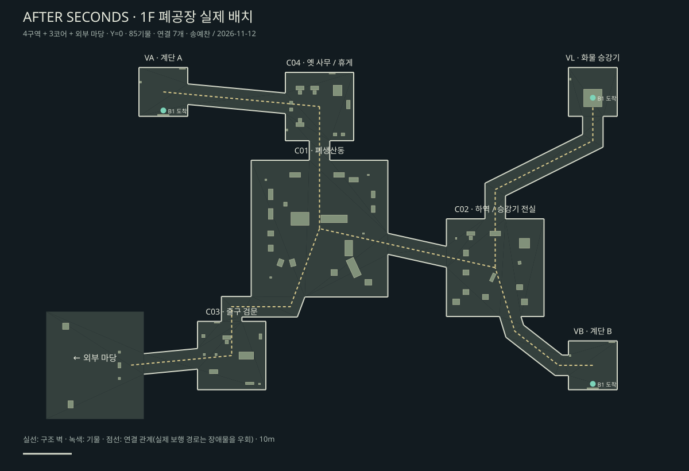

지상 1층 · 폐공장
송예찬 · 2026-11-12 · Unity 6000.4.0f1 · Level_1F_Factory
세 코어에서 올라와 옛 사무동과 하역장을 거쳐 생산동·출구 검문·외부 마당으로 이어지는 지상층이다. 직선 공장 건물, 철골 지붕, 높은 창, 녹슨 운반·생산 설비와 직원 공간을 구성했다.
4구역 + 3코어 + 마당연결 7개 · 기물 85배치통행 84/84Play 8곳 · Look 통과LOD 82 · 조명 37 · 반사 7

구역별 화면
실제 플레이
기존 Player의 키보드 입력으로 이동했고 프레임 진행·위치 변화·경고/오류를 함께 기록했다. 아래 화면은 실제 Game 뷰 캡처다. 배포 빌드 성능 측정과 권장 사양 확정 자료는 아니다.
이번 범위는 공간·아트·충돌과 보행 검수다. 층 전환, 승강기·보안문 작동, AI, 아이템 사용과 결말 연출은 후속 게임 구현 범위다. 기존 층과 공유 에셋 13,171파일의 SHA-256을 보존했다.